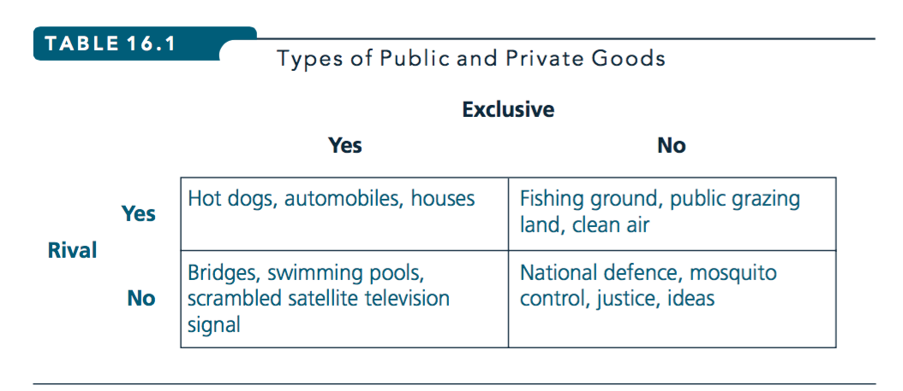

Market failure (One case: Public goods) (L8)
Consider…
Market failures - public goods, coverage
- NS: Ch 16 – public goods section only (skip Lindahl eqiliibrium, median voter, single-peaked preferences optional)
Additional readings on private provision of a public good, Charitable giving, Information goods \(\rightarrow\) further below
Key goals of these lectures (and accompanying self-study)
How do economists define a public good? What fits into this category?
Better understand ‘market failures’
- Be able to explain: why a competitive market will usually undersupply} a public good, but may still supply of it
Understand (in general):
- difficulties government faces in providing the right amount/mix of public goods
- General patterns and evidence on voluntary provision of public goods, including in ‘lab experiments’
- … and what are ‘lab experiments’ in Economics?
Note: will bring in some ‘game theory’ here as necessary, come back for more later
Outline: What’s a public good, why do markets provide these sub-optimally, (how) can governments provide these optimally, when do people provide them voluntarily?
Market failures
… Occur when prices don’t fully reflect the marginal social benefits or costs
May provide scope for political intervention
How does this happen?
- One potential source of market failure: Public Goods
Public Goods (attributes, categories)
Public Goods (attributes, categories)
What are the characteristics of a public good?
Def – A Pure Public Good is a good that is both
- Non-excludable: Once the good is provided, it is impossible/costly to prevent any individual from using/benefiting from it.
- Non-rival: One person’s consumption doesn’t reduce the quantity available for others.
The fact that some people use the good doesn’t prevent others from using the same good.
There is no ‘crowding.’
Provision/consumption to additional users at zero marginal (social) cost.
In between’s (self-study)

Excludable and rival (depleatable)? \(\rightarrow\) Private good
‘Club goods’: excludable but non-rivalrous (at least up to a congestion point).
“Common property”: Nonexcludable but rivalrous
‘Somewhat’ nonexcludable and/or ‘somewhat’ nonrival: $ ightarrow$ ‘impure public goods.’

What about?
- Recorded music
- ‘Information’ goods (e.g., software)
- A national park
- A theatre performance
- Roads
- Clean air
- Education
- Aid to the needy
What about?
- Loud music coming from my window
- Disease control
- Economic research
- The justice system
- Fireworks in Disney World
- The 2012 Olympics in London
The basic ideas
If a good is non-rival then additional provision (of the units produced, to more consumers) is costless.
Thus,
- if exclusion is possible, and any positive price is charged, some are deterred from consuming it
- this is inefficient: people who could benefit from the good, at no cost to others, will not consume it :(
And…
(If non-rival)
Even if each person provided it for their own benefit (on the assumption that no one else would), they would typically choose too little from a social POV…
Considering their own marginal benefits (and MRS) versus the price or cost, not the social marginal benefit (an ‘externality’ to them)
If a good is non-excludable it will be difficult to charge people for it
- many will prefer to wait for others to buy it, and then they enjoy it anyways (free-ride) (that’s a ‘coordination problem’)
But if firms cannot charge for its full value, they might not pay the fixed costs to develop/build/provide it
Who would pay to produce a film that is freely pirated/distributed? Who would pay to develop a drug that must be priced at its marginal cost? Why contribute to police protection for your village, if your neighbours will pay for it anyways?
Motivation
Policy: ‘Public goods argument’ - justifies many government programmes (military, environmental cleanup, research, etc)
Management: Companies/individuals can only profit (or even cover costs) from providing a public good through ???

…gaining subsidies, helping others avoid enforcement (fines) or ???

gaining voluntary support … or ??

by turning it into a private (or excludable) good.
Application: drug development [SELF-STUDY]
Drug R&D may be a public good, or a common resource
Expensive to develop and introduce a new drug – ‘sunk costs’ once developed
But cheap to copy and produce; without patent protection may have \(P=mc\) and no ex-post profit to compensate for sunk costs
\(\rightarrow\) No incentive to develop drugs without patent protection guaranteeing ‘excludability’ and a limited monopoly
(…drug development)
But ex-post, patent protection is costly; drug produced for a few pennies, sold for 1000’s
- People may not buy, or NHS may not cover
- \(\rightarrow\) Inefficient: some consumers may value drug at 100’s, far above MC, yet they don’t consume it
- Possible solution: Government awards and subsidies for drug development.
Midterm covers everything up to this point (and mostly the earlier stuff)
##Some key things for midterm (recap)
14 MCQ, some all or nothing, some partial credit:
Seven longer-answers, choose 2, 1 side of a page each.
What is microeconomics?
How do economists measure and test models, Empirical work and causal inference… techniques/terms used, what is micro-data, panel/time-series/cross-section data
Considerations in estimating demand and supply curves
What is the use and interpretation of ‘economic theory and models’, how are these tested, readings on this and on relevance for experiments.
Basic ‘supply and demand’ model, ‘shortage/surplus’ from Economic pov
The ‘axioms’ over preferences, the justification for these, and what they imply for utility functions, what if they didn’t hold?
Economists’ views on ‘what utility is’
‘Behavioural’ challenges to the model of a consistent maximisation
Consumer’s optimisation problem: maximisation and minimisation problems
Understand indifference curves and budget constraints well
Conditions for consumer optimisation including for when a consumer will choose to consume none of a good
Be able to state and solve a simple consumer optimisation problem, considering corner solutions
Definitions of ‘types of goods’ as implied by characteristics of the demand function
How individual demand aggregates to market demand (basic sketch).
Impacts of price changes (own good, other good) and income on an individual’s consumption, and what goes into this and how to depict it.
Lump sum principle, deadweight loss of commodity tax, gifts, or price subsidies
- (Producer and) consumer surplus
- ‘Applications’, especially those discussed both in the assigned text and in the lectures.
Firm’s conditions for optimisation in input choice (basics)
- Firm’s conditions for ‘what quantity to choose’ under different market conditions (price-taking, non-price-taking)
Which production functions have CRS, IRS, etc; implication for cost curves
Why IRS, DRS, etc?
Perfect competition in the LR and the SR, what profits look like, how prices move.
General equilibrium (basic idea)
Components and conditions for overall Pareto efficiency
Market failures, public goods (basic idea)
Public Goods and Market Failure
Public Goods and Market Failure
The First Welfare Theorem’s assumptions/conditions do not apply to public goods. Markets do not yield a Pareto Optimal outcome.
- Non-excludability \(\rightarrow\) coordination problems \(\rightarrow\) no price or suboptimal price \(\rightarrow\) firms don’t get the correct signals for production
- Non-rivalry \(\rightarrow\) each unit provides benefit to all, consumer choices don’t reflect this\(\rightarrow\) firms don’t get correct signals
Social benefit of a private good vs a public good
Overall value of a private good: (area under the) ‘horizontal sum’ of individual marginal benefit curves
- Because ‘only one person consumes each unit’
- Public goods: ‘everyone consumes the same unit’
\(\rightarrow\) aggregate value, thus ‘social marginal benefit’ of public good sums vertically
MOVE to powerpoint here


With a binary choice (provide or don’t) it is a ‘Prisoner’s Dilemma’:

Optimal provision of public goods
Optimal provision of public goods (more formal)
Move to board and web-book for detailed solution here
Normalizations, basically “WLOG”:
Each £ spent (or £ of cost incurred) on the private good (X) yields “1 util”, and costs £1
Same quasilinear utility function for everyone
\[u_i(x,G)= x + u(G)\], where \(G=\sum_{i=1}^{N}\)
Assume diminishing MRS
\(\rightarrow\) we have the unique optimum provision… requires \(G=G^\ast\) sets:
\[\sum_{i=1}^{N} \frac{\partial u_i(x_i,G)}{\partial G}/MC(G) = \frac{\partial u_i(x_i,G)}{\partial x_i}/MC(x)\]
Given our normalisations, simplify to …
\[\sum_{i=1}^{N} \frac{\partial u(G)}{\partial G}/MC(G) = 1\]
I.e., \[\sum_{i=1}^{N} MB_i(G) = MC(G)\]
Now… individuals’ private contributions w/o intervention
Denote … \(G \equiv\sum_{i=1}^{N}g_i\) …\(g_{-i}\equiv G-g_i\).
"Symmetric interior solution, best-response ‘equilibrium’’’
*Given amount provided by others, I ‘top-up’ until my PRIVATE marginal benefit equals the cost:
\[\frac{\partial u_i(g_i+g_{-i})}{\partial g_i}\equiv MB_i(g_i+g_{-i})\equiv MB_i(G)=mc(G)\]
… the old ‘bang for the buck’ … but here it’s the ‘private bang’.
\[\frac{\partial u_i(g_i+g_{-i})}{\partial g_i}\equiv MB_i(g_i+g_{-i})\equiv MB_i(G)=mc(G)\]
Clearly not compatible with condition for Pareto-optimal provision (if \(N>1\)):
\[\sum_{i=1}^{N} MB_i(G) = MC(G)\]
Stated slightly differently we have have the “Samuelson condition” for optimal provision
\[\sum_{i=1}^{N} MRS_i(G,X) = MRT(G,X)\]
For the efficient mix of public and private goods (top-level efficiency)… the sum of each individual’s MRS’s must equal the economy’s MRT.
Cf private goods: top-level efficiency required that for each individual \(i\) the \(MRS_i=MRT\).
Practice question
Consider an economy with N individuals each with income m which they can use for own consumption c at “numeraire” price 1 (representing the cost of production), or contribute to a public good.
Suppose each individual’s utility is: \(U_i(c,G)= c + ln(G)\)
What is the optimal total provision of this public good?
What will be the total private voluntary provision? Does it matter if we consider only ‘symmetric’ equilibria or if we allow asymmetric provision (some provided more than others)
Show/argue that an omniscient and powerful government could ensure an outcome that is a Pareto-improvement over the symmetric private outcome?
Now let \(U_i = c+0.9*(G)\); answer the above questions for this case.
Solutions to the Public Goods Problem
Solutions to the Public Goods Problem
- Skip: Lindahl equilibrium
3-5 minutes
Partner in groups of 2-3 with the person on your right/left. Can you agree on and explain in simple language?
What is a public good? What do we call a good with only 1 of these 2 necessary properties?
Why does the free market underprovide these? Why/when do they provide some amount?
2 minute exercise - partner in groups of 2-3
What is an example of a public good, perhaps one from your own life that we didn’t already mention
What are some things you think may lead to more voluntary provision of public goods?
Government’s role
- Pure public goods not provided optimally by free market, i.e., voluntarily
- although people do contribute to public goods, e.g., making charitable donations, for various reasons
A justification for government: to enforce contributions to public goods, and make everyone better off
- But it’s hard to determine tastes for the public good, hence difficult to determine the optimal level!
Revealing the Demand for Public Goods (brief)
Suppose some people like fireworks, and some don’t. How many should the town pay for?
- Ask everyone to state the number of fireworks they want, and we choose the average and split costs evenly?
- \(\rightarrow\) Fireworks-lovers may overstate their value to skew the average.
- Ask everyone to state number they want; choose average; those who stated more pay more?
- \(\rightarrow\) Many people understate their value to avoid having to pay. Doh!
Thus:
Difficult or impossible to find a ‘mechanism’ that leads to ‘truth-telling’.
- Direct voting on each proposal also may not lead to the optimal choice
Voting paradox example
Green party: Green Park \(\succ\) Public housing \(\succ\) Private housing
Labour: Public housing \(\succ\) Private Housing \(\succ\) Green Park
Conservatives: Private Housing \(\succ\) Green Park \(\succ\) Public housing
- Suppose we have a local council with one member of each party (representing equal-sized constituencies).
- Which proposal would win if they voted on:
- a Green park versus Public housing?
- a Green Park versus Private housing?
- Private housing versus Public housing?
Does a majority vote reveal a clear ‘social preference’?
No, not here.
Lab evidence on voluntary provision of Public Goods
Lab evidence on voluntary provision of Public Goods

Typical ‘Public Goods Experiment’
- Four undergraduates seated, each get $5 ‘endowment’
- Told each can choose to invest none/some/all in ‘group project’
Each simultaneously puts $0-$5 in envelope (or via computer)
Experimenter collects ‘contributions’, doubles total, divides it equally among group
My private benefit from this ‘public good’ = \(\frac{1}{2}\) of total contributions, so I only get back half of my own contribution
We say the ‘marginal per capita return’ \((MPCR=1/2)\)
Basic results
- On average, subjects contribute halfway between everything and nothing
- Contributions decline with repetition, but not to zero
- Face to face communication improves the rate of contribution
Today I learned (‘TIL’)
- What is a pure public good (nonrival, nonexcludable), some examples, variations
- Why do markets fail to provide these optimally; private versus social marginal benefit
- Obstacles to government’s optimal provision (how do we know how much to provide?)
- General patterns on ‘public goods provision in laboratory Economics experiments’
Exam-type questions

… (2018 exam)

Supplementary readings
Ledyard, J.O., 1993. Public Goods: A Survey of Experimental Research, Division of the Humanities and Social Sciences, California Institute of Technology.
Chaudhuri, 2011. Sustaining cooperation in laboratory public goods experiments: a selective survey of the literature
- Or any more recent survey!
Vesterlund, Lise. “Voluntary giving to public goods: moving beyond the linear VCM.” Handbook of Experimental Economics 2 (2012).
Varian, Hal R. “Buying, sharing and renting information goods.” The Journal of Industrial Economics 48.4 (2000): 473-488.
- Any updates to this?
Alternate focus: charitable giving, supplementary survey and handbook articles
See my page: innovationsinfundraising.org
I’d love to have your feedback on this
Survey and handbook articles
Andreoni and Payne (2013). Chapter 1 ‘Charitable Giving’ in Auerbach, Alan J., et al., eds. Handbook of public economics. Vol. 5. Newnes, 2013.
List (2011). Econ Perspectives or List (2008, ExpEcon), ’Introduction to field experiments in economics with applications to the economics of charity
Andreoni (2006), ‘Philanthropy’ in Handbook of Giving, Reciprocity and Altruism; Andreoni (2005). ‘Charitable Giving’
Bekkers and Wiepking, esp ‘Part 2: why do people give’
Sargent and Woodliffe;
Duncan (2004); Atkinson (2008); List (2011, JEPR)
Non-academic accounts: Behavioural Insights Team (2013), ‘Applying Behavioural Insights to Charitable Giving.’ (Semi-academic)
Public Goods games … understand
- Understanding of the PG game/VCM and the theory behind it
- Its variations and terminology (e.g., ‘MPCR’, ‘stranger-matching’, ‘endgame’, ‘punishment’)
- Methodological issues
- Patterns of contributions in VCMs
- Some things repeatedly found to increase contributions in VCMs
- Relation to field evidence
Charitable giving … understand
- Can it be modeled as a contribution to a public good?
- What are the ‘puzzles’ in this modeling
- What is meant by ‘warm glow’ giving and ‘impure altruism’?
- What are other models and motivators of charitable giving
- Some evidence on things that increase donations
Information goods … understand
When and why these may have characteristics of Public Goods
How firms may profit from selling information goods, and when this may be less than efficient
Government intervention and potential policy improvements in these markets